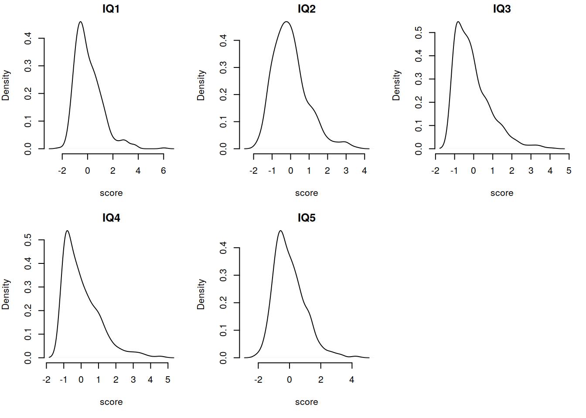

Chapter 11 SEM II
Lecture Slides
- The lecture slides can be accessed here.
Overview
In this final week we are going to address some practical issues that commonly arise in Structural Equation Modeling: Non-normality, ordinal-categorical endogeneous variables, and missingness. In the example for this week a researcher is interested in the effects of prenatal stress on child cognitive outcomes. She has a 5-item measure of prenatal stress and a 5 subtest measure of child cognitive ability, collected for 500 mother-infant dyads.
- The data is available as a .csv file here: https://edin.ac/3bod7nJ
Exercises
► Question 1
The prenatal stress questionnaire items are measured on a 3-point scale.
Read in the data and fit a one-factor confirmatory factor analysis using an appropriate estimation method.
► Solution
## # A tibble: 6 x 11
## ID stress1 stress2 stress3 stress4 stress5 IQ1 IQ2 IQ3 IQ4 IQ5
## <dbl> <dbl> <dbl> <dbl> <dbl> <dbl> <dbl> <dbl> <dbl> <dbl> <dbl>
## 1 1 1 2 1 2 1 -0.114 0.00278 -0.593 -0.949 1.01
## 2 2 2 2 1 2 2 -0.885 -1.63 -0.673 -0.562 -1.12
## 3 3 1 1 1 2 1 -0.200 0.259 -0.449 -0.648 -1.03
## 4 4 2 1 1 2 1 0.187 1.19 -0.160 -0.623 -0.0263
## 5 5 2 2 2 2 2 0.845 2.53 2.19 1.79 -0.127
## 6 6 2 2 2 2 2 -1.11 -0.349 1.31 -0.864 -1.52## vars n mean sd median trimmed mad min max range skew kurtosis se
## ID 1 500 250.50 144.48 250.50 250.50 185.32 1.00 500.00 499.00 0.00 -1.21 6.46
## stress1 2 500 1.59 0.56 2.00 1.57 0.00 1.00 3.00 2.00 0.22 -0.90 0.02
## stress2 3 500 1.90 0.51 2.00 1.90 0.00 1.00 3.00 2.00 -0.16 0.65 0.02
## stress3 4 500 1.24 0.43 1.00 1.18 0.00 1.00 3.00 2.00 1.26 -0.19 0.02
## stress4 5 500 2.03 0.33 2.00 2.00 0.00 1.00 3.00 2.00 0.57 5.78 0.01
## stress5 6 500 1.63 0.55 2.00 1.62 0.00 1.00 3.00 2.00 0.10 -0.87 0.02
## IQ1 7 500 0.06 1.06 -0.18 -0.06 0.94 -2.25 6.02 8.28 1.28 2.72 0.05
## IQ2 8 500 -0.01 0.93 -0.13 -0.09 0.83 -1.83 3.58 5.40 0.93 1.08 0.04
## IQ3 9 500 -0.06 0.93 -0.28 -0.19 0.85 -1.07 4.05 5.12 1.34 1.93 0.04
## IQ4 10 500 0.04 1.04 -0.24 -0.11 0.94 -1.07 4.56 5.63 1.40 2.17 0.05
## IQ5 11 500 0.00 0.98 -0.16 -0.08 0.91 -2.14 4.35 6.48 0.95 1.39 0.04# specify the model
model_stress <- 'Stress=~stress1+stress2+stress3+stress4+stress5'
# estimate the model - cfa will automatically switch to a categorical estimator
# if we mention that our five variables are ordered-categorical, using the 'ordered' function
model_stress.est <- cfa(model_stress, data=stress_IQ_data,
ordered=c('stress1','stress2','stress3','stress4','stress5'))
# inspect the output
summary(model_stress.est, fit.measures=T, standardized=T)## lavaan 0.6-5 ended normally after 18 iterations
##
## Estimator DWLS
## Optimization method NLMINB
## Number of free parameters 15
##
## Number of observations 500
##
## Model Test User Model:
## Standard Robust
## Test Statistic 0.520 0.773
## Degrees of freedom 5 5
## P-value (Chi-square) 0.991 0.979
## Scaling correction factor 0.740
## Shift parameter 0.070
## for the simple second-order correction
##
## Model Test Baseline Model:
##
## Test statistic 552.578 498.463
## Degrees of freedom 10 10
## P-value 0.000 0.000
## Scaling correction factor 1.111
##
## User Model versus Baseline Model:
##
## Comparative Fit Index (CFI) 1.000 1.000
## Tucker-Lewis Index (TLI) 1.017 1.017
##
## Robust Comparative Fit Index (CFI) NA
## Robust Tucker-Lewis Index (TLI) NA
##
## Root Mean Square Error of Approximation:
##
## RMSEA 0.000 0.000
## 90 Percent confidence interval - lower 0.000 0.000
## 90 Percent confidence interval - upper 0.000 0.000
## P-value RMSEA <= 0.05 1.000 0.999
##
## Robust RMSEA NA
## 90 Percent confidence interval - lower 0.000
## 90 Percent confidence interval - upper 0.000
##
## Standardized Root Mean Square Residual:
##
## SRMR 0.012 0.012
##
## Parameter Estimates:
##
## Information Expected
## Information saturated (h1) model Unstructured
## Standard errors Robust.sem
##
## Latent Variables:
## Estimate Std.Err z-value P(>|z|) Std.lv Std.all
## Stress =~
## stress1 1.000 0.619 0.619
## stress2 1.111 0.121 9.214 0.000 0.688 0.688
## stress3 1.182 0.137 8.614 0.000 0.732 0.732
## stress4 1.049 0.130 8.089 0.000 0.649 0.649
## stress5 1.134 0.129 8.790 0.000 0.702 0.702
##
## Intercepts:
## Estimate Std.Err z-value P(>|z|) Std.lv Std.all
## .stress1 0.000 0.000 0.000
## .stress2 0.000 0.000 0.000
## .stress3 0.000 0.000 0.000
## .stress4 0.000 0.000 0.000
## .stress5 0.000 0.000 0.000
## Stress 0.000 0.000 0.000
##
## Thresholds:
## Estimate Std.Err z-value P(>|z|) Std.lv Std.all
## stress1|t1 -0.151 0.056 -2.680 0.007 -0.151 -0.151
## stress1|t2 1.825 0.108 16.973 0.000 1.825 1.825
## stress2|t1 -0.900 0.065 -13.806 0.000 -0.900 -0.900
## stress2|t2 1.379 0.081 17.124 0.000 1.379 1.379
## stress3|t1 0.700 0.061 11.399 0.000 0.700 0.700
## stress3|t2 2.878 0.315 9.124 0.000 2.878 2.878
## stress4|t1 -1.751 0.102 -17.198 0.000 -1.751 -1.751
## stress4|t2 1.461 0.084 17.324 0.000 1.461 1.461
## stress5|t1 -0.233 0.057 -4.107 0.000 -0.233 -0.233
## stress5|t2 1.825 0.108 16.973 0.000 1.825 1.825
##
## Variances:
## Estimate Std.Err z-value P(>|z|) Std.lv Std.all
## .stress1 0.616 0.616 0.616
## .stress2 0.526 0.526 0.526
## .stress3 0.464 0.464 0.464
## .stress4 0.578 0.578 0.578
## .stress5 0.507 0.507 0.507
## Stress 0.384 0.064 6.011 0.000 1.000 1.000
##
## Scales y*:
## Estimate Std.Err z-value P(>|z|) Std.lv Std.all
## stress1 1.000 1.000 1.000
## stress2 1.000 1.000 1.000
## stress3 1.000 1.000 1.000
## stress4 1.000 1.000 1.000
## stress5 1.000 1.000 1.000We look at the ‘robust’ values for the fit statistics (those that appear in the right-hand column under ‘robust’) to check that our model fits well. Another new thing is the presence of ‘thresholds’ in the output. These are two thresholds per item in this example because we have a three-point response scale. Thresholds are the points on the hypothetical underlying continuum where individuals move from scoring in one category to the next one up.
► Question 2
Now let’s conduct a CFA for the IQ items. Check their distributions and fit a one-factor CFA using an appropriate estimation method
► Solution
We should check the item distributions for evidence of non-normality (skewness and kurtosis). We can use the describe() function from psych and plot the data using histograms or density curves.
## vars n mean sd median trimmed mad min max range skew kurtosis se
## IQ1 1 500 0.06 1.06 -0.18 -0.06 0.94 -2.25 6.02 8.28 1.28 2.72 0.05
## IQ2 2 500 -0.01 0.93 -0.13 -0.09 0.83 -1.83 3.58 5.40 0.93 1.08 0.04
## IQ3 3 500 -0.06 0.93 -0.28 -0.19 0.85 -1.07 4.05 5.12 1.34 1.93 0.04
## IQ4 4 500 0.04 1.04 -0.24 -0.11 0.94 -1.07 4.56 5.63 1.40 2.17 0.05
## IQ5 5 500 0.00 0.98 -0.16 -0.08 0.91 -2.14 4.35 6.48 0.95 1.39 0.04## GGPLOT
# temporarily reshape the data to long format to make it quicker to plot
stress_IQ_data %>%
pivot_longer(IQ1:IQ5, names_to="variable",values_to="score") %>%
ggplot(aes(x=score))+
geom_density()+
facet_wrap(~variable)+
theme_light()
Or we could do similar in base R:
# specify that the figure is made up of 2-by-3, i.e. 6, panels, and the figure margins
par(mfrow = c(2,3), mar = c(5, 4, 1.5, 1.5))
## BASE R
d_IQ1 <- density(stress_IQ_data$IQ1) # returns the density data
plot(d_IQ1, main='IQ1', xlab='score', frame=FALSE) # plots the results
d_IQ2 <- density(stress_IQ_data$IQ2)
plot(d_IQ2, main='IQ2', xlab='score', frame=FALSE)
d_IQ3 <- density(stress_IQ_data$IQ3)
plot(d_IQ3, main='IQ3', xlab='score', frame=FALSE)
d_IQ4 <- density(stress_IQ_data$IQ4)
plot(d_IQ4, main='IQ4', xlab='score', frame=FALSE)
d_IQ5 <- density(stress_IQ_data$IQ5)
plot(d_IQ5, main='IQ5', xlab='score', frame=FALSE)
# return to figures with a single panel
par(mfrow = c(1,1))
Because our variables seem to be non-normal, therefore, we should use a robust estimator such as MLR for our CFA
model_IQ <- 'IQ=~IQ1+IQ2+IQ3+IQ4+IQ5'
model_IQ.est <- cfa(model_IQ, data=stress_IQ_data, estimator='MLR')
summary(model_IQ.est, fit.measures=T, standardized=T)## lavaan 0.6-5 ended normally after 17 iterations
##
## Estimator ML
## Optimization method NLMINB
## Number of free parameters 10
##
## Number of observations 500
##
## Model Test User Model:
## Standard Robust
## Test Statistic 90.039 86.467
## Degrees of freedom 5 5
## P-value (Chi-square) 0.000 0.000
## Scaling correction factor 1.041
## for the Yuan-Bentler correction (Mplus variant)
##
## Model Test Baseline Model:
##
## Test statistic 936.990 695.162
## Degrees of freedom 10 10
## P-value 0.000 0.000
## Scaling correction factor 1.348
##
## User Model versus Baseline Model:
##
## Comparative Fit Index (CFI) 0.908 0.881
## Tucker-Lewis Index (TLI) 0.817 0.762
##
## Robust Comparative Fit Index (CFI) 0.908
## Robust Tucker-Lewis Index (TLI) 0.816
##
## Loglikelihood and Information Criteria:
##
## Loglikelihood user model (H0) -3091.265 -3091.265
## Scaling correction factor 1.797
## for the MLR correction
## Loglikelihood unrestricted model (H1) -3046.246 -3046.246
## Scaling correction factor 1.545
## for the MLR correction
##
## Akaike (AIC) 6202.531 6202.531
## Bayesian (BIC) 6244.677 6244.677
## Sample-size adjusted Bayesian (BIC) 6212.936 6212.936
##
## Root Mean Square Error of Approximation:
##
## RMSEA 0.184 0.181
## 90 Percent confidence interval - lower 0.152 0.149
## 90 Percent confidence interval - upper 0.219 0.214
## P-value RMSEA <= 0.05 0.000 0.000
##
## Robust RMSEA 0.184
## 90 Percent confidence interval - lower 0.151
## 90 Percent confidence interval - upper 0.219
##
## Standardized Root Mean Square Residual:
##
## SRMR 0.057 0.057
##
## Parameter Estimates:
##
## Information Observed
## Observed information based on Hessian
## Standard errors Robust.huber.white
##
## Latent Variables:
## Estimate Std.Err z-value P(>|z|) Std.lv Std.all
## IQ =~
## IQ1 1.000 0.828 0.783
## IQ2 0.856 0.048 17.840 0.000 0.709 0.761
## IQ3 0.713 0.076 9.369 0.000 0.590 0.636
## IQ4 0.829 0.095 8.702 0.000 0.686 0.657
## IQ5 0.812 0.085 9.553 0.000 0.672 0.684
##
## Variances:
## Estimate Std.Err z-value P(>|z|) Std.lv Std.all
## .IQ1 0.431 0.060 7.140 0.000 0.431 0.386
## .IQ2 0.365 0.046 7.902 0.000 0.365 0.421
## .IQ3 0.513 0.059 8.679 0.000 0.513 0.596
## .IQ4 0.618 0.070 8.866 0.000 0.618 0.568
## .IQ5 0.514 0.052 9.858 0.000 0.514 0.532
## IQ 0.686 0.097 7.044 0.000 1.000 1.000The model doesn’t fit very well so we could check the modification indices for local mis-specifications
## lhs op rhs mi epc sepc.lv sepc.all sepc.nox
## 12 IQ1 ~~ IQ2 82.653 0.302 0.302 0.762 0.762
## 21 IQ4 ~~ IQ5 48.799 0.224 0.224 0.397 0.397
## 17 IQ2 ~~ IQ4 29.875 -0.166 -0.166 -0.349 -0.349
## 14 IQ1 ~~ IQ4 15.906 -0.138 -0.138 -0.268 -0.268
## 15 IQ1 ~~ IQ5 15.870 -0.132 -0.132 -0.279 -0.279
## 19 IQ3 ~~ IQ4 15.720 0.122 0.122 0.216 0.216
## 18 IQ2 ~~ IQ5 6.147 -0.071 -0.071 -0.165 -0.165
## 16 IQ2 ~~ IQ3 4.216 -0.055 -0.055 -0.128 -0.128
## 13 IQ1 ~~ IQ3 3.108 -0.054 -0.054 -0.115 -0.115
## 20 IQ3 ~~ IQ5 0.305 0.016 0.016 0.031 0.031It looks like we might need to include residual covariances between subtests 1 and 2 and between subtests 4 and 5, though we would want to double check this makes substantive sense (for example, do subtests 1 and 2 both measure memory while subtests 4 and 5 both test spatial ability?)
model2_IQ <- 'IQ=~IQ1+IQ2+IQ3+IQ4+IQ5
IQ1~~IQ2
IQ4~~IQ5'
model2_IQ.est <- cfa(model2_IQ, data=stress_IQ_data, estimator='MLR')
summary(model2_IQ.est, fit.measures=T, standardized=T)## lavaan 0.6-5 ended normally after 22 iterations
##
## Estimator ML
## Optimization method NLMINB
## Number of free parameters 12
##
## Number of observations 500
##
## Model Test User Model:
## Standard Robust
## Test Statistic 8.709 7.422
## Degrees of freedom 3 3
## P-value (Chi-square) 0.033 0.060
## Scaling correction factor 1.173
## for the Yuan-Bentler correction (Mplus variant)
##
## Model Test Baseline Model:
##
## Test statistic 936.990 695.162
## Degrees of freedom 10 10
## P-value 0.000 0.000
## Scaling correction factor 1.348
##
## User Model versus Baseline Model:
##
## Comparative Fit Index (CFI) 0.994 0.994
## Tucker-Lewis Index (TLI) 0.979 0.978
##
## Robust Comparative Fit Index (CFI) 0.994
## Robust Tucker-Lewis Index (TLI) 0.981
##
## Loglikelihood and Information Criteria:
##
## Loglikelihood user model (H0) -3050.600 -3050.600
## Scaling correction factor 1.638
## for the MLR correction
## Loglikelihood unrestricted model (H1) -3046.246 -3046.246
## Scaling correction factor 1.545
## for the MLR correction
##
## Akaike (AIC) 6125.201 6125.201
## Bayesian (BIC) 6175.776 6175.776
## Sample-size adjusted Bayesian (BIC) 6137.687 6137.687
##
## Root Mean Square Error of Approximation:
##
## RMSEA 0.062 0.054
## 90 Percent confidence interval - lower 0.015 0.001
## 90 Percent confidence interval - upper 0.111 0.101
## P-value RMSEA <= 0.05 0.278 0.368
##
## Robust RMSEA 0.059
## 90 Percent confidence interval - lower NA
## 90 Percent confidence interval - upper 0.114
##
## Standardized Root Mean Square Residual:
##
## SRMR 0.017 0.017
##
## Parameter Estimates:
##
## Information Observed
## Observed information based on Hessian
## Standard errors Robust.huber.white
##
## Latent Variables:
## Estimate Std.Err z-value P(>|z|) Std.lv Std.all
## IQ =~
## IQ1 1.000 0.724 0.685
## IQ2 0.842 0.059 14.384 0.000 0.610 0.655
## IQ3 0.882 0.090 9.813 0.000 0.639 0.689
## IQ4 0.991 0.113 8.794 0.000 0.718 0.688
## IQ5 0.935 0.096 9.751 0.000 0.677 0.689
##
## Covariances:
## Estimate Std.Err z-value P(>|z|) Std.lv Std.all
## .IQ1 ~~
## .IQ2 0.231 0.047 4.964 0.000 0.231 0.427
## .IQ4 ~~
## .IQ5 0.114 0.047 2.430 0.015 0.114 0.211
##
## Variances:
## Estimate Std.Err z-value P(>|z|) Std.lv Std.all
## .IQ1 0.592 0.078 7.617 0.000 0.592 0.530
## .IQ2 0.496 0.050 9.954 0.000 0.496 0.571
## .IQ3 0.452 0.059 7.640 0.000 0.452 0.525
## .IQ4 0.573 0.072 8.001 0.000 0.573 0.526
## .IQ5 0.508 0.056 9.009 0.000 0.508 0.526
## IQ 0.525 0.083 6.322 0.000 1.000 1.000The fit of the model is now much improved!
► Question 3
Estimate the effect of prenatal stress on IQ using a full SEM
► Solution
SEM_model <- '
#IQ measurement model
IQ=~IQ1+IQ2+IQ3+IQ4+IQ5
IQ1~~IQ2
IQ4~~IQ5
#stress measurement model
Stress=~stress1+stress2+stress3+stress4+stress5
#structural part of model
IQ~Stress'We know that IQ is non-normal, so we would like to use a robust estimator (e.g. MLR). However, as lavaan will tell you if you try using estimator="MLR", this is not yet supported for ordered data (i.e., the Stress items). It suggests instead using the WLSMV (weighted least square mean and variance adjusted) estimator:
SEM_model.est <- sem(SEM_model, data=stress_IQ_data,
ordered=c('stress1','stress2','stress3','stress4','stress5'),
estimator="WLSMV")
summary(SEM_model.est, fit.measures=T, standardized=T)## lavaan 0.6-5 ended normally after 30 iterations
##
## Estimator DWLS
## Optimization method NLMINB
## Number of free parameters 33
##
## Number of observations 500
##
## Model Test User Model:
## Standard Robust
## Test Statistic 15.942 26.960
## Degrees of freedom 32 32
## P-value (Chi-square) 0.992 0.720
## Scaling correction factor 0.812
## Shift parameter 7.315
## for the simple second-order correction
##
## Model Test Baseline Model:
##
## Test statistic 2142.900 1240.251
## Degrees of freedom 45 45
## P-value 0.000 0.000
## Scaling correction factor 1.755
##
## User Model versus Baseline Model:
##
## Comparative Fit Index (CFI) 1.000 1.000
## Tucker-Lewis Index (TLI) 1.011 1.006
##
## Robust Comparative Fit Index (CFI) NA
## Robust Tucker-Lewis Index (TLI) NA
##
## Root Mean Square Error of Approximation:
##
## RMSEA 0.000 0.000
## 90 Percent confidence interval - lower 0.000 0.000
## 90 Percent confidence interval - upper 0.000 0.026
## P-value RMSEA <= 0.05 1.000 1.000
##
## Robust RMSEA NA
## 90 Percent confidence interval - lower 0.000
## 90 Percent confidence interval - upper NA
##
## Standardized Root Mean Square Residual:
##
## SRMR 0.030 0.030
##
## Parameter Estimates:
##
## Information Expected
## Information saturated (h1) model Unstructured
## Standard errors Robust.sem
##
## Latent Variables:
## Estimate Std.Err z-value P(>|z|) Std.lv Std.all
## IQ =~
## IQ1 1.000 0.711 0.673
## IQ2 0.845 0.046 18.389 0.000 0.600 0.644
## IQ3 0.894 0.071 12.632 0.000 0.635 0.685
## IQ4 1.032 0.087 11.908 0.000 0.733 0.703
## IQ5 0.967 0.078 12.406 0.000 0.688 0.700
## Stress =~
## stress1 1.000 0.613 0.613
## stress2 1.096 0.124 8.816 0.000 0.672 0.672
## stress3 1.244 0.150 8.323 0.000 0.763 0.763
## stress4 1.062 0.152 7.012 0.000 0.651 0.651
## stress5 1.135 0.126 8.988 0.000 0.696 0.696
##
## Regressions:
## Estimate Std.Err z-value P(>|z|) Std.lv Std.all
## IQ ~
## Stress 0.450 0.081 5.528 0.000 0.388 0.388
##
## Covariances:
## Estimate Std.Err z-value P(>|z|) Std.lv Std.all
## .IQ1 ~~
## .IQ2 0.246 0.032 7.757 0.000 0.246 0.442
## .IQ4 ~~
## .IQ5 0.095 0.037 2.582 0.010 0.095 0.183
##
## Intercepts:
## Estimate Std.Err z-value P(>|z|) Std.lv Std.all
## .IQ1 0.059 0.059 1.013 0.311 0.059 0.056
## .IQ2 -0.009 0.049 -0.182 0.856 -0.009 -0.010
## .IQ3 -0.056 0.056 -0.989 0.322 -0.056 -0.060
## .IQ4 0.040 0.064 0.620 0.535 0.040 0.038
## .IQ5 0.001 0.051 0.017 0.987 0.001 0.001
## .stress1 0.000 0.000 0.000
## .stress2 0.000 0.000 0.000
## .stress3 0.000 0.000 0.000
## .stress4 0.000 0.000 0.000
## .stress5 0.000 0.000 0.000
## .IQ 0.000 0.000 0.000
## Stress 0.000 0.000 0.000
##
## Thresholds:
## Estimate Std.Err z-value P(>|z|) Std.lv Std.all
## stress1|t1 -0.151 0.056 -2.680 0.007 -0.151 -0.151
## stress1|t2 1.825 0.108 16.973 0.000 1.825 1.825
## stress2|t1 -0.900 0.065 -13.806 0.000 -0.900 -0.900
## stress2|t2 1.379 0.081 17.124 0.000 1.379 1.379
## stress3|t1 0.700 0.061 11.399 0.000 0.700 0.700
## stress3|t2 2.878 0.315 9.124 0.000 2.878 2.878
## stress4|t1 -1.751 0.102 -17.198 0.000 -1.751 -1.751
## stress4|t2 1.461 0.084 17.324 0.000 1.461 1.461
## stress5|t1 -0.233 0.057 -4.107 0.000 -0.233 -0.233
## stress5|t2 1.825 0.108 16.973 0.000 1.825 1.825
##
## Variances:
## Estimate Std.Err z-value P(>|z|) Std.lv Std.all
## .IQ1 0.612 0.046 13.340 0.000 0.612 0.548
## .IQ2 0.508 0.037 13.605 0.000 0.508 0.585
## .IQ3 0.457 0.037 12.223 0.000 0.457 0.531
## .IQ4 0.551 0.045 12.292 0.000 0.551 0.506
## .IQ5 0.493 0.043 11.481 0.000 0.493 0.510
## .stress1 0.624 0.624 0.624
## .stress2 0.549 0.549 0.549
## .stress3 0.418 0.418 0.418
## .stress4 0.576 0.576 0.576
## .stress5 0.515 0.515 0.515
## .IQ 0.429 0.052 8.221 0.000 0.849 0.849
## Stress 0.376 0.065 5.788 0.000 1.000 1.000
##
## Scales y*:
## Estimate Std.Err z-value P(>|z|) Std.lv Std.all
## stress1 1.000 1.000 1.000
## stress2 1.000 1.000 1.000
## stress3 1.000 1.000 1.000
## stress4 1.000 1.000 1.000
## stress5 1.000 1.000 1.000When we have any ordered-categorical endogenous variables in the model lavaan uses DWLS estimation, even if some of the variables are continous. We can see this from the ‘Estimator’ section of the output. We can also see that the effect of prenatal stress on offspring IQ is \(\beta = 0.388\) and statistically significant at \(p<.05\).
► Question 4
In order to try and replicate the IQ CFA, our researcher collects a new sample of size \(n=500\). However, she has some missing data. Specifically, those who scored poorly on earlier tests tended to feel discouraged and chose not to complete further tests.
Conduct a CFA using the new data, taking account of the missingness.
- The data can be found at https://edin.ac/2WGJav3, and is in .csv format.
► Solution
We can fit the model setting missing=‘FIML’. If data are missing at random (MAR) - i.e., missingness is related to the measured variables but not the unobserved missing values - then this gives us unbiased parameter estimates. Unfortunately we can never know whether data are MAR for sure as this would require knowledge of the missing values.
IQ_model_missing <- 'IQ=~IQ1+IQ2+IQ3+IQ4+IQ5
IQ1~~IQ2
IQ4~~IQ5'
IQ_model_missing.est <- cfa(IQ_model_missing, data=IQ_data_new, missing='FIML', estimator="MLR")
summary(IQ_model_missing.est, fit.measures=T, standardized=T)## lavaan 0.6-5 ended normally after 25 iterations
##
## Estimator ML
## Optimization method NLMINB
## Number of free parameters 17
##
## Number of observations 500
## Number of missing patterns 3
##
## Model Test User Model:
## Standard Robust
## Test Statistic 4.218 3.559
## Degrees of freedom 3 3
## P-value (Chi-square) 0.239 0.313
## Scaling correction factor 1.185
## for the Yuan-Bentler correction (Mplus variant)
##
## Model Test Baseline Model:
##
## Test statistic 914.603 657.484
## Degrees of freedom 10 10
## P-value 0.000 0.000
## Scaling correction factor 1.391
##
## User Model versus Baseline Model:
##
## Comparative Fit Index (CFI) 0.999 0.999
## Tucker-Lewis Index (TLI) 0.996 0.997
##
## Robust Comparative Fit Index (CFI) 0.999
## Robust Tucker-Lewis Index (TLI) 0.998
##
## Loglikelihood and Information Criteria:
##
## Loglikelihood user model (H0) -2979.748 -2979.748
## Scaling correction factor 1.635
## for the MLR correction
## Loglikelihood unrestricted model (H1) -2977.639 -2977.639
## Scaling correction factor 1.568
## for the MLR correction
##
## Akaike (AIC) 5993.496 5993.496
## Bayesian (BIC) 6065.145 6065.145
## Sample-size adjusted Bayesian (BIC) 6011.185 6011.185
##
## Root Mean Square Error of Approximation:
##
## RMSEA 0.028 0.019
## 90 Percent confidence interval - lower 0.000 0.000
## 90 Percent confidence interval - upper 0.085 0.076
## P-value RMSEA <= 0.05 0.658 0.756
##
## Robust RMSEA 0.021
## 90 Percent confidence interval - lower 0.000
## 90 Percent confidence interval - upper 0.087
##
## Standardized Root Mean Square Residual:
##
## SRMR 0.008 0.008
##
## Parameter Estimates:
##
## Information Observed
## Observed information based on Hessian
## Standard errors Robust.huber.white
##
## Latent Variables:
## Estimate Std.Err z-value P(>|z|) Std.lv Std.all
## IQ =~
## IQ1 1.000 0.658 0.674
## IQ2 0.994 0.072 13.792 0.000 0.654 0.673
## IQ3 1.033 0.106 9.768 0.000 0.679 0.685
## IQ4 0.989 0.113 8.788 0.000 0.651 0.676
## IQ5 0.958 0.119 8.073 0.000 0.630 0.672
##
## Covariances:
## Estimate Std.Err z-value P(>|z|) Std.lv Std.all
## .IQ1 ~~
## .IQ2 0.248 0.049 5.029 0.000 0.248 0.480
## .IQ4 ~~
## .IQ5 0.072 0.049 1.452 0.146 0.072 0.146
##
## Intercepts:
## Estimate Std.Err z-value P(>|z|) Std.lv Std.all
## .IQ1 0.010 0.044 0.229 0.819 0.010 0.010
## .IQ2 -0.007 0.043 -0.170 0.865 -0.007 -0.008
## .IQ3 0.027 0.044 0.602 0.547 0.027 0.027
## .IQ4 0.002 0.043 0.050 0.960 0.002 0.002
## .IQ5 -0.001 0.042 -0.029 0.977 -0.001 -0.001
## IQ 0.000 0.000 0.000
##
## Variances:
## Estimate Std.Err z-value P(>|z|) Std.lv Std.all
## .IQ1 0.519 0.064 8.103 0.000 0.519 0.545
## .IQ2 0.515 0.063 8.222 0.000 0.515 0.546
## .IQ3 0.521 0.063 8.324 0.000 0.521 0.530
## .IQ4 0.504 0.062 8.190 0.000 0.504 0.543
## .IQ5 0.482 0.069 6.998 0.000 0.482 0.549
## IQ 0.433 0.073 5.899 0.000 1.000 1.000